The history under the campus
Built on a runway
Tech Ridge sits on the south end of the Black Hill, the black lava mesa on the west side of St. George. Before it was a business park it was the municipal airport.
1929 to 2011
The airfield on the Black Hill
| Year | What happened |
|---|---|
| 1929 | Pilot Maurice Graham lands on a racetrack and tells the town the Black Hill is the place for an airfield: high, flat, clear. Within a few years there is a graded runway, a windsock, and a beacon light. |
| 1937 | The field becomes the Department of Commerce's Site 34 on the Los Angeles to Salt Lake airway: three thousand feet of gravel on thirty-four acres, part of Contract Air Mail Route 4, the route marked across the desert with giant concrete arrows. Airmail service begins the next year. |
| May 10, 1940 | The airport is formally dedicated and the runway paved. In 1959 the main runway stretches to 5,100 feet. |
| June 19, 1972 | SkyWest begins operations on this mesa with a single Piper Navajo, and grows into one of the largest regional airlines in the world. It is still headquartered in St. George. |
| January 13, 2011 | The airport closes; operations move across the valley. A few years later the mesa is renamed Tech Ridge. |
| February 29, 2018 | The company takes the name Zonos at a live event held on this same ridge, nine years after starting in a basement in Salt Lake. |
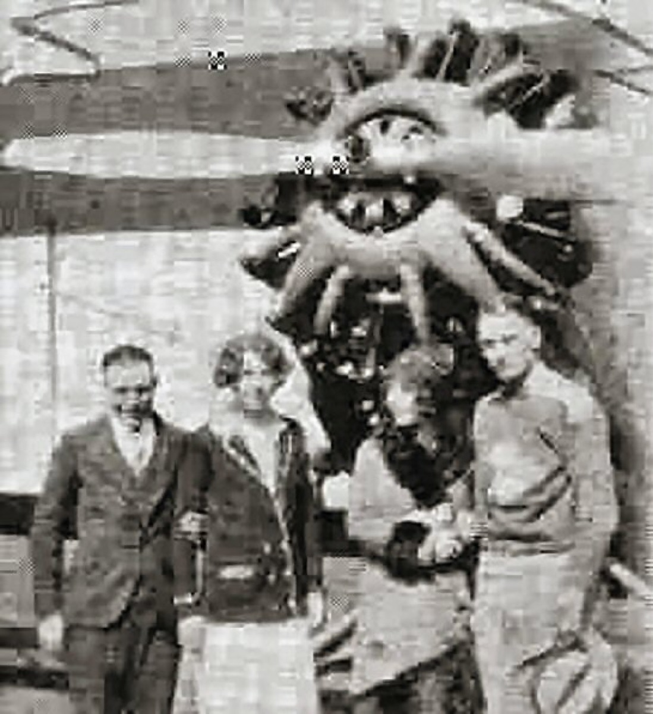
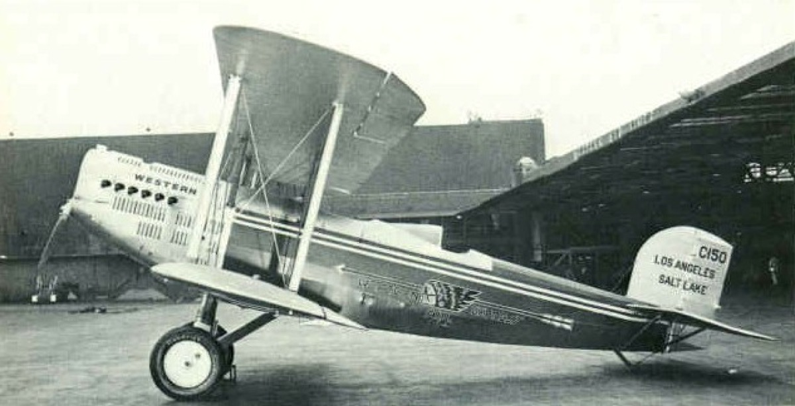
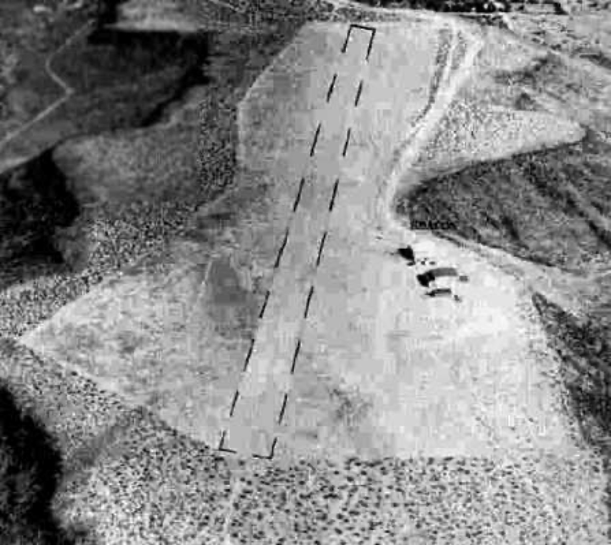
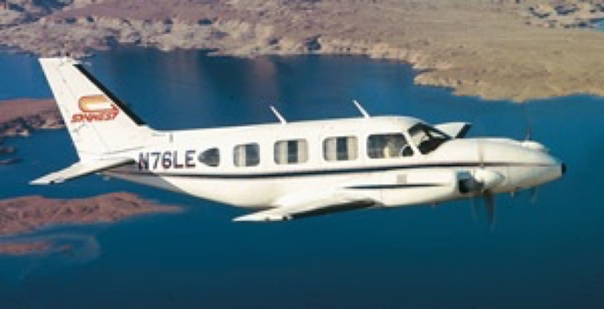
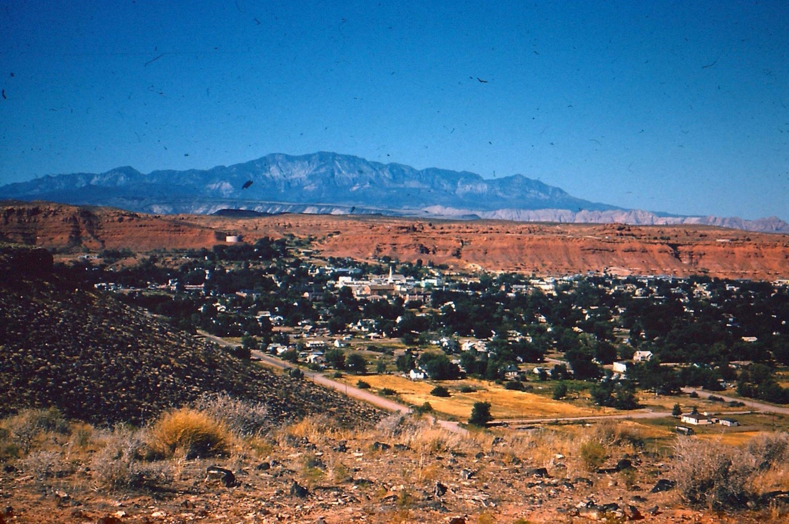
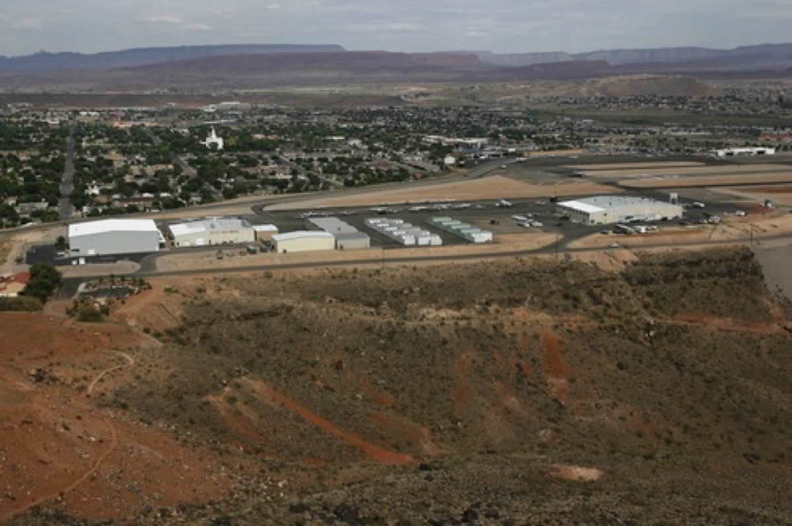
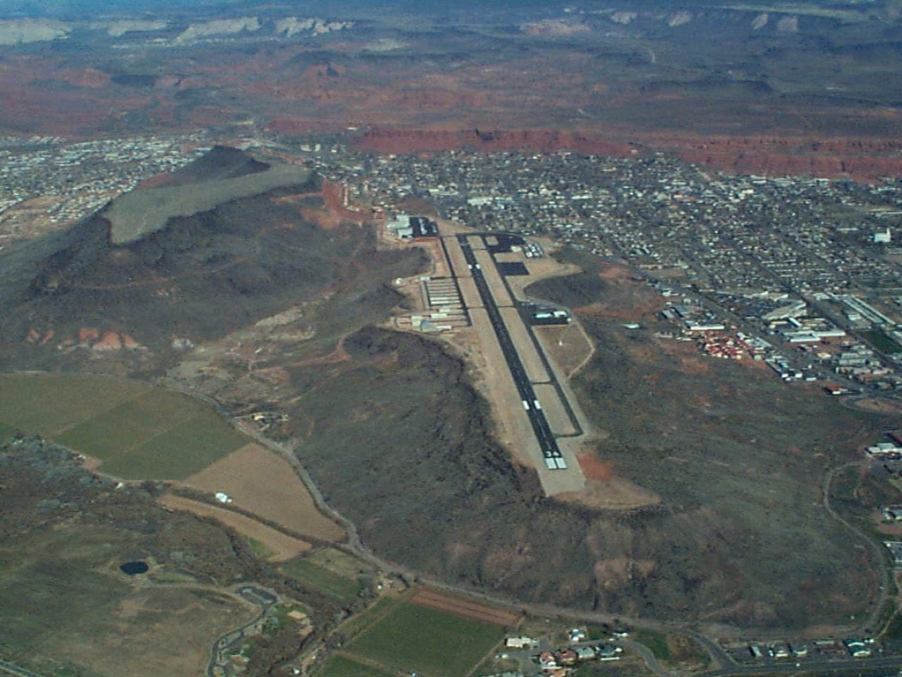
Beacon lights, concrete arrows, airmail, an airline that started with one small plane: the mesa's whole history is about connecting a remote town to the world. A cross-border trade company now sits on the old runway. The architecture can use that history.
Before the runway
The pioneer builders
The buildings St. George is known for are the argument for timeless. The temple's foundation rock was quarried from this same volcanic ridge; the tabernacle's red sandstone came out of local quarries by hand. Thick masonry, deep shaded porches, local stone, simple strong geometry: built for the heat by people who did not expect to see them age. The new building should inherit that durability, not a style.
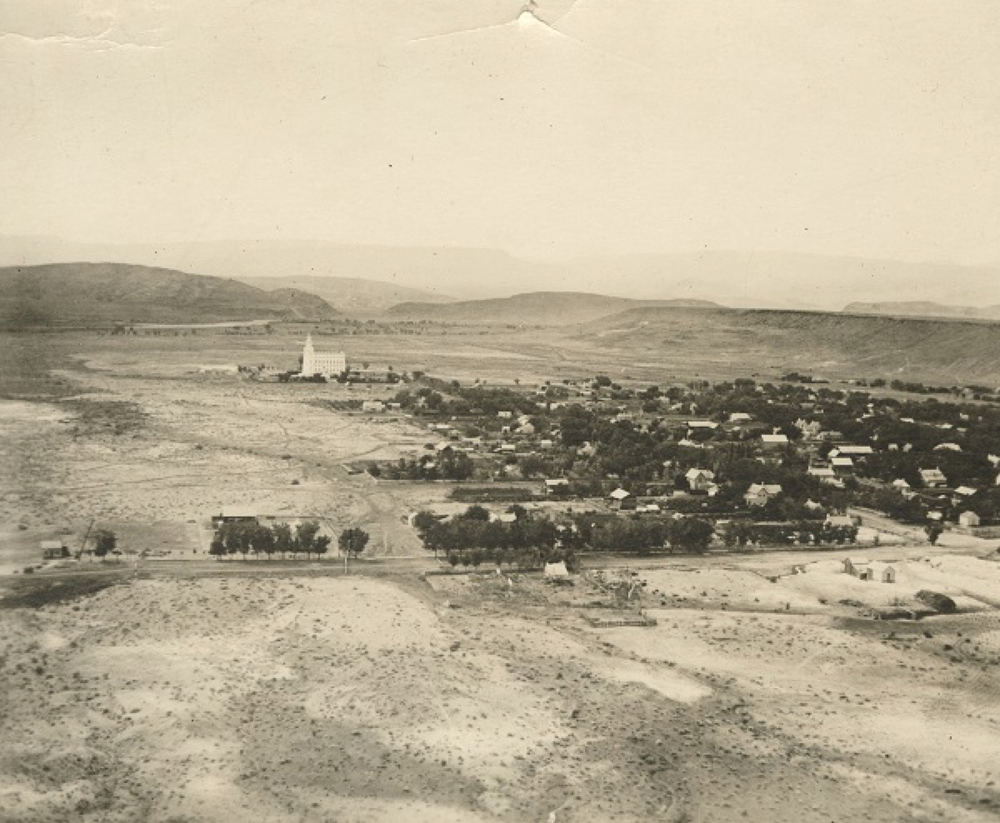
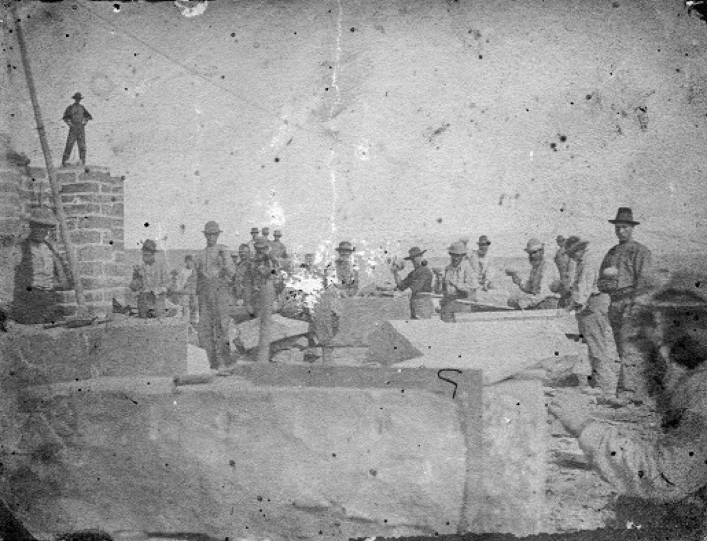
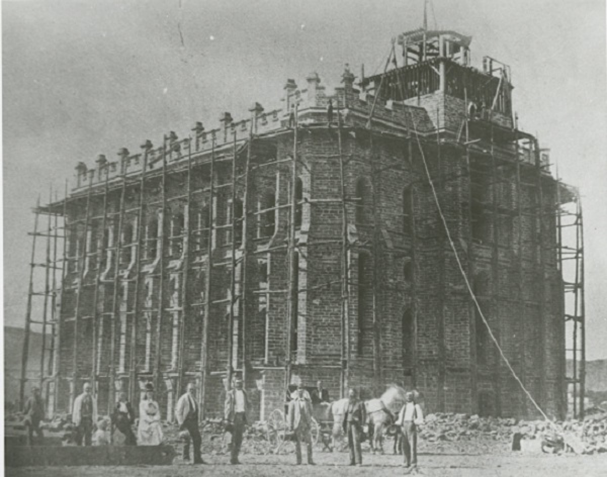
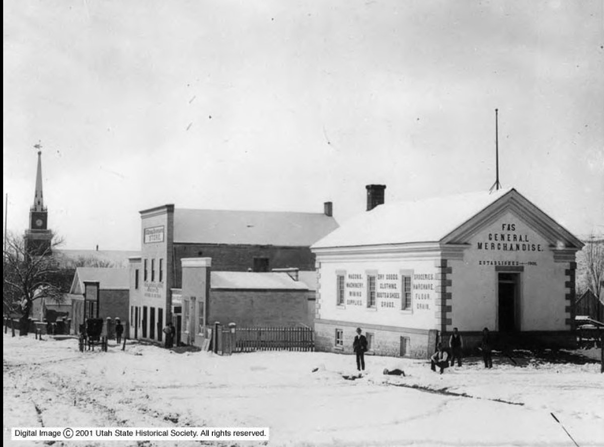
The mark in the ground
The Cipher
The Zonos mark is a coil: one continuous path that goes all the way in and all the way back out. The plan under way is to build it out of the mountain itself, about a hundred feet across, on the dirt flat between the offices and the lava edge: black basalt gathered on site, walkable to the center and back. Built by hand, by the team, not by a contractor. The campus gets its first landmark before the building exists.
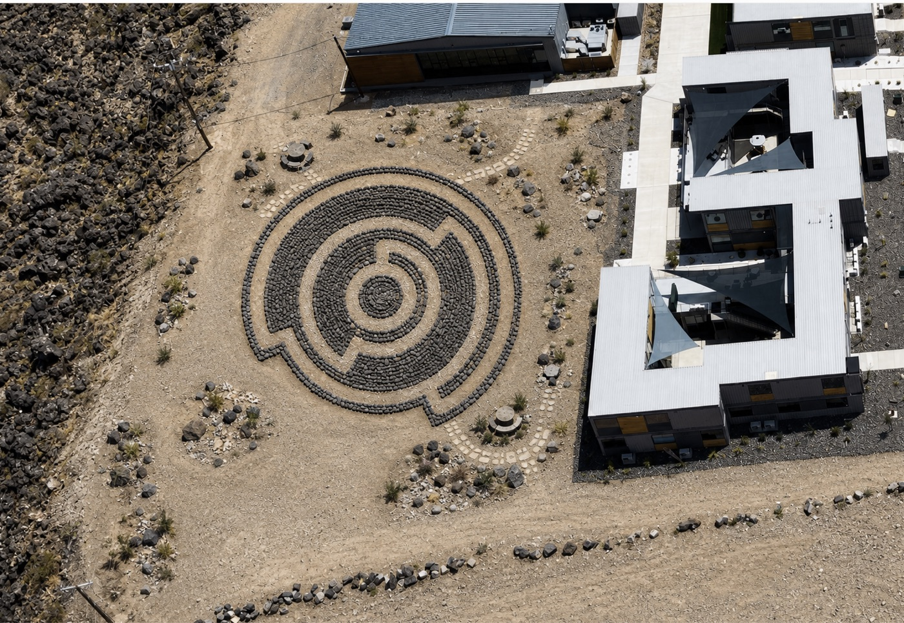
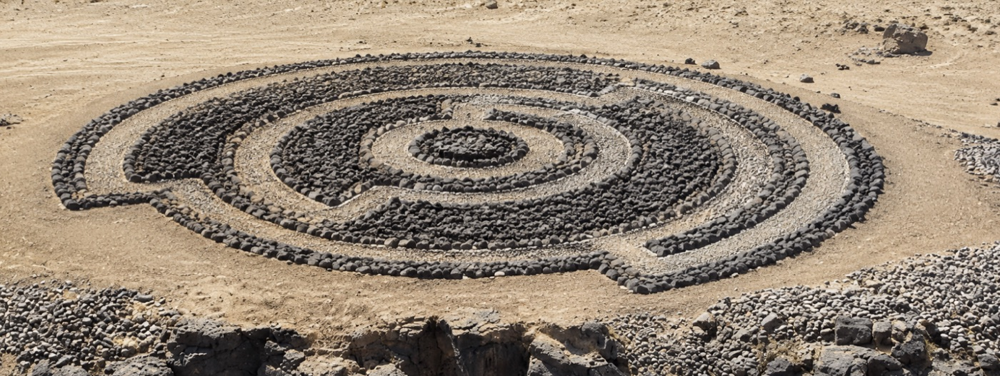
A larger archive backs this page: 424 photographs of this hill and this town, 1929 onward, collected in the project files. More will be added here.